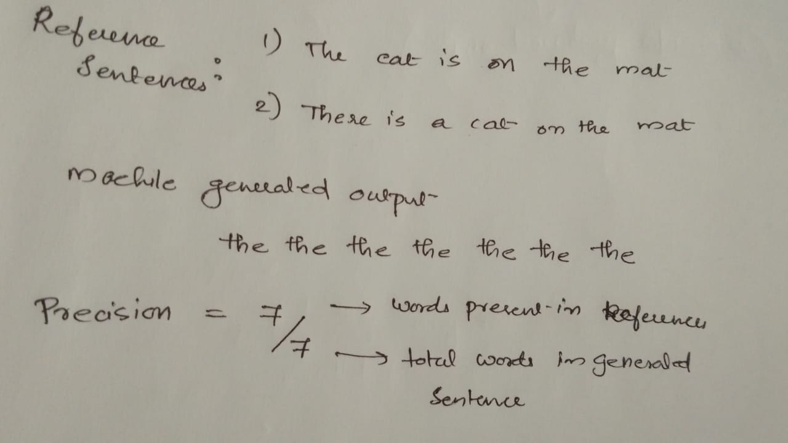
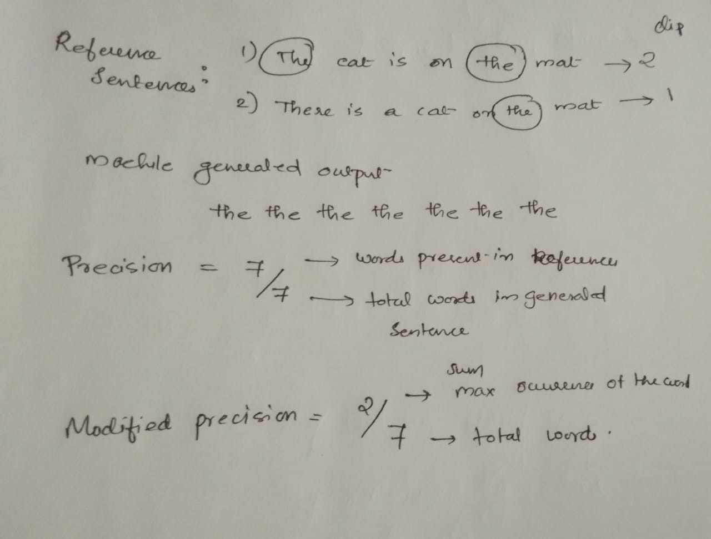
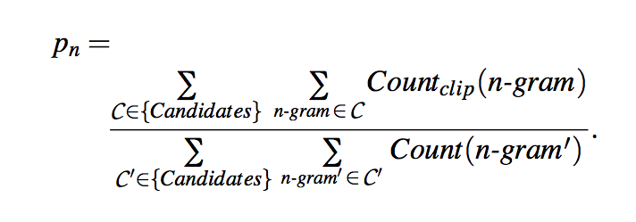
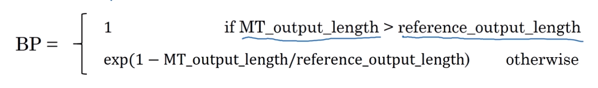

Okay, people, this blog has something that I have been procrastinating for a long long time. As an AI engineer especially one working with NLP I should know the current state of the arts in and outright. Although I have been reading some of those here and there I never felt confident enough to say that I know things. So this blog series is an attempt to learn those stuff from scratch. As we always say let us “learn do share repeat” together.
Let us dive into the sequence to sequence models.
The application of seq-to-seq models includes machine translation, image captioning etc
Consider a situation where you have to translate one sentence to another ( look into the example of french to English) where we will be translating word to word using RNNs. The research paper on Sequence to Sequence Learning with Neural Network discuss this in detail 🔖

A similar architecture will work for image captioning as well. Here we need a representation for the images right? For that, we use Convolutional Neural Networks example AlexNet. In AlexNet if we remove the softmax in the final layer it will give a feature vector of dimension 4096 and it will act as an input to the encoder network. If the caption that you want to generate is not so long then it works pretty well.
Before diving into the details of the research paper of Seq-to-Seq Model I just want to mention a comparison between language models and the machine translation models
In language models, you will be inputting one word in a sentence and want to predict the next word preceding that.
A small peek into Language models
In the earlier days ( a paper by Yoshua Bengio called neural probabilistic language model 2003) They used a one-hot encoder for a word then multiplied it with a word vector to produce a new dimension and then fed it to a NN with hidden layers followed by a softmax with it’s own parameters. The softmax will predict the probability of the correct work from the entire size of the corpus. In this approach, they introduced the size of the window to fit the dimension of the input into a fixed length. That means while predicting the next word it will be considering a fixed-length of previous words. As I mentioned above the size of the word vector is fixed (300) and the created word vectors will be of that dimension only. So if there are many words in the corpus and if two words occur multiple time with similar likely hood they might have very similar vectors( eg. Orange juice and Apple Juice will produce similar vectors to orange and apple) . Moving forward the algorithm got simplified over time. The previous case was to predict one target word by considering context ( which is the previous 4 words). In new approaches, the contexts got modified. Rather than considering the previous words, it started looking into the later four words as well, or nearby 1 word ( skip-gram model).
Wors2Vec
Here similar to the previous scenario a set of input words are provided to predict a set of output words ( during the process we managed to get a good representation of the words called embedding from the final layer). Let us look into that..
In the Skip-gram model, the input word will be the context word and the target word will be a random work in the proximity of 4 words.
Assume the Vocab = 10K
And the context word ----> to Target word
Similar to the previous example the one-hot representation of the model multiplied with the embedding vector then fed into the softmax unit and then to predict the output.
Softmax will be predicting the probability of the target word with the context words by adjusting the loss function. Once the training is over we will get a good embedding vector. The biggest challenge of this approach is computational speed ( we have to take the sum of all the words in the corpus). One solution is the Hierarchical Softmax. It reduces the computational size to log|V| where V is the vocab size. It does not use a balanced or symmetric tree. In practice, it uses the method common words are on the top and others are on the bottom. The sample of context words is selected with a balance between frequent words and less frequent words. There are more to this research like Negative sampling and GloVe word vectors let us discuss about those in another blog where we solely talk about Language models.
I know that I went a little bit off-topic but the main reason why that I discussed language models is to show the similarity between the language models and the Machine translation models. After the encoding part, we are using a system that resembles the language model part where the translational model target words will be in another language ( instead of starting the embedding vector of 0s here we have an embedding layer). Hence we can say that machine translation is a conditional language model. In this method, you will be able to understand what is the most likely translation out of many. If we choose the words at random from distribution, but we introduce an algorithm that maximises one sentence over others using beam search. [ why not Greedy search: a method word by word analysis done for predicting the sentence, but in reality, approximate search algorithm used due to the complexity increases exponentially for to the length of sentences]
BLEU Score ( Bilingual Evaluation Understudy)
In earlier examples, we saw that one sentence can have multiple translations. How do we decide which translation is good? The intuition of the BLEU Score is that there will be a couple of human-generated translations as references. This approach is introduced by Papineni et al in 2002 Bleu: A method for automatic evaluation for machine translation. It will check the words generated are in the references or not. Precision - how many of the generated words are present in the actual reference sentence.
From the example, it can be seen that precision is not a good metric to evaluate. Hence, they introduced modified precision where it will provide a weight of max occurrence either of the reference sentences
Similarly, we can calculate the score for bigrams where we consider bigrams in the generated outputs and calculate their occurrences and then calculate their maximum appearance(Clipped) in the references and average them.
Then we take the average value the exp of that score will give the final score it strictly monotonically increasing operation. But there is a penalty called BP(Brevity Penalty) to adjust the final score it is to handle the output translations that are very small to the reference translations. Hence the score calculation will become
Finally, I know in this blog we discussed about lot of things, but there are more things to come if you feel there is something missing we will address those in the coming blogs till then happy learning 🤓